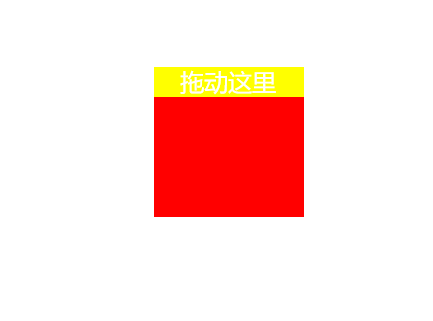
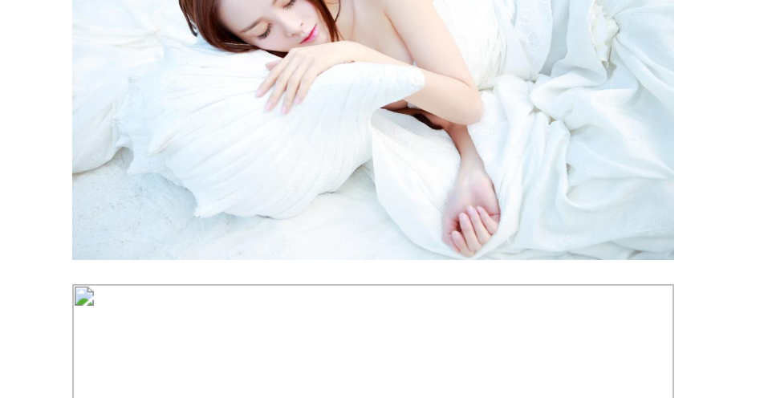
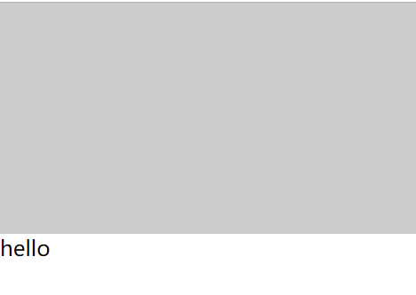
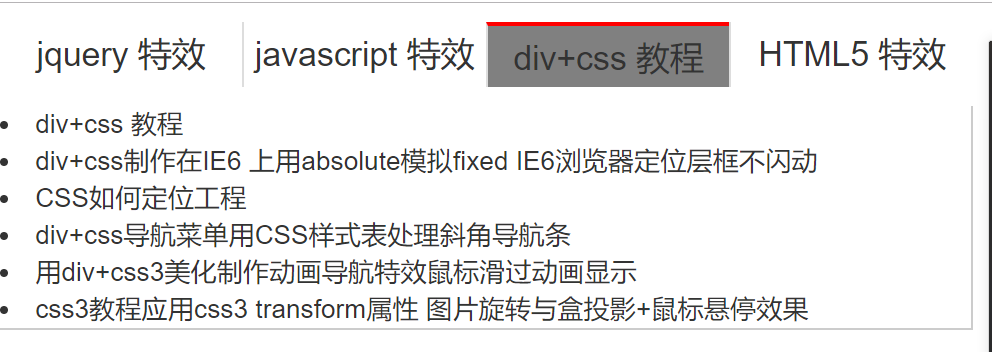
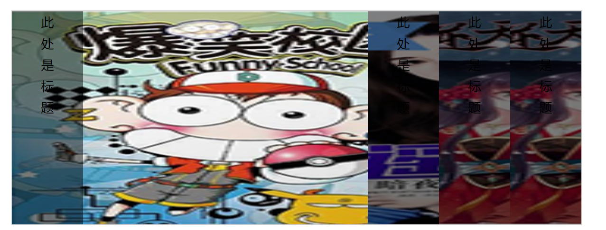
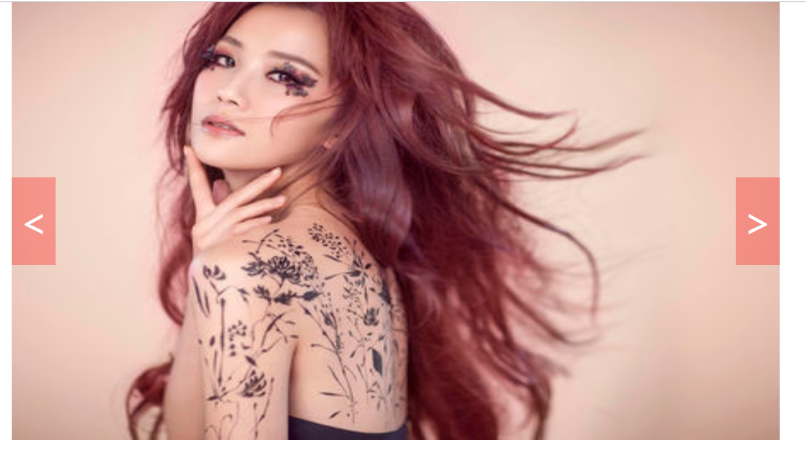
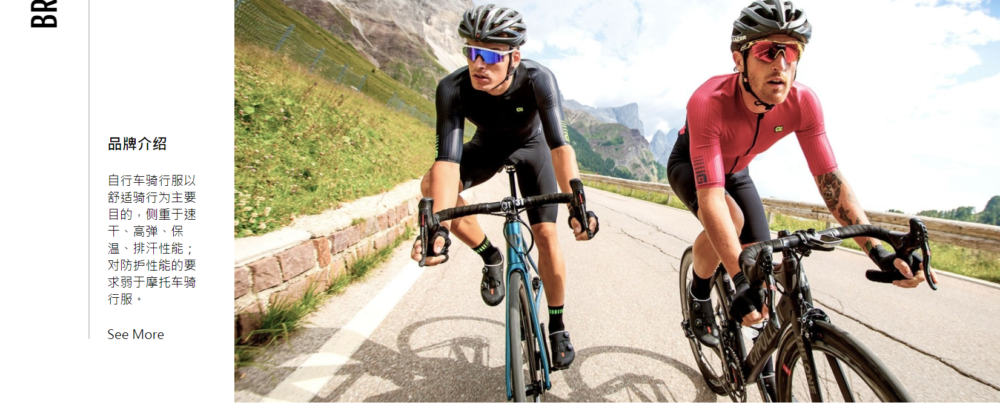
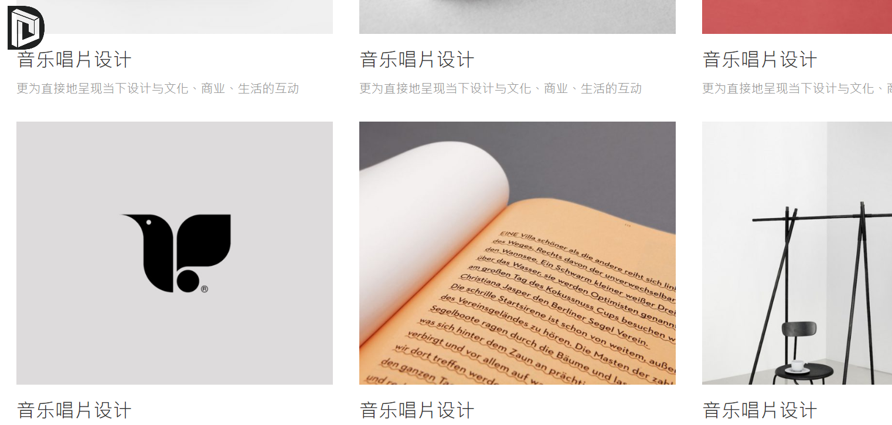

最新项目
-
个人博客页面实现鼠标拖动效果
想要实现鼠标拖拽效果，需要计算鼠标当前的位置以及移动的位置。所以，可有使用以下方法来实现。
-
个人博客页面图片延迟加载效果
想要实现页面图片延迟加载效果，需要给当前图片设置自定义属性，到了该加载的时候设置src，需要用到滚动条。所以，可有使用以下方法来实现。
-
个人博客页面下拉刷新效果
想要实现页面下拉刷新效果，需要用到拖拽效果的写法，以及定时器的灵活运用。所以，可有使用以下方法来实现。
-
个人博客选项卡组件效果
选项卡的原理是肯定有一个对应的索引。所以，可有使用以下方法来实现。
-
个人博客手风琴组件效果
手风琴的原理是肯定有一个对应的索引。所以，可有使用以下方法来实现。
-
个人博客轮播组件效果
轮播图的原理是肯定有一个对应的索引。而且移动他的距离。所以，可有使用以下方法来实现。
-
个人博客组件写的页面
组件写页面用Vue的component实现。所以，可有使用以下方法来实现。
-
个人博客组件写的页面
组件写页面用Vue的component实现。所以，可有使用以下方法来实现。
模板排行
- 【活动作品】柠檬绿兔小白个人博客模板30...
 展示的是首页html，博客页面布局格式简单，没有复杂的背景，色彩局部点缀，动态的幻灯片展示，切换卡，标...
展示的是首页html，博客页面布局格式简单，没有复杂的背景，色彩局部点缀，动态的幻灯片展示，切换卡，标...